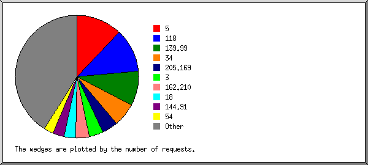
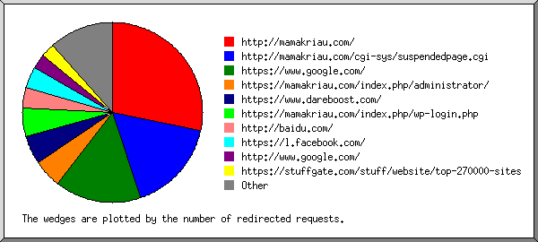
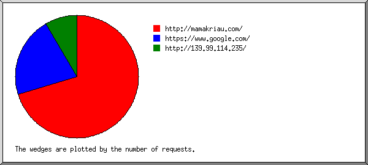
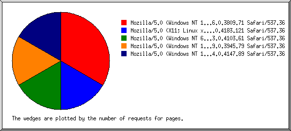
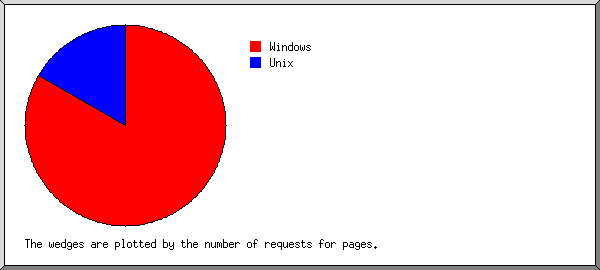
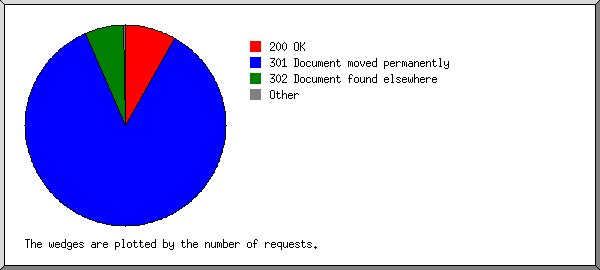
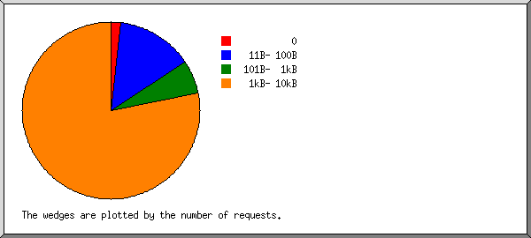
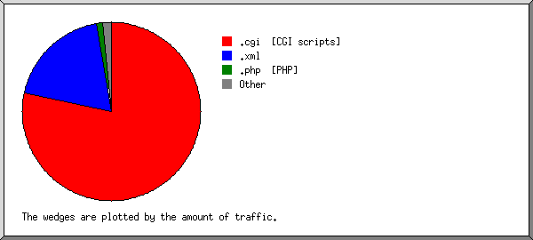
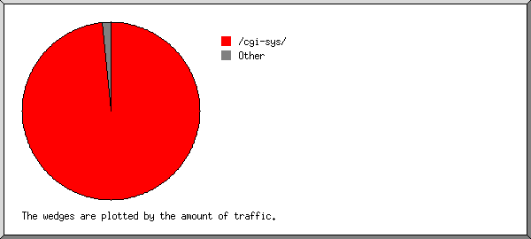
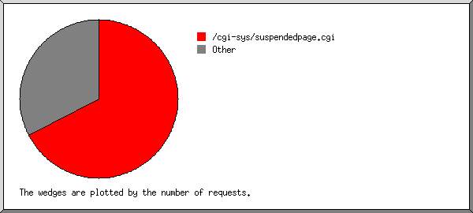

Web Server Statistics for mamakriau.com
Web Server Statistics for mamakriau.com
Program started on Thu, Apr 15 2021 at 8:08 PM.
Analyzed requests from Sun, Jan 10 2021 at 7:23 AM to Thu, Apr 15 2021 at 3:08 PM (95.32 days).
Web Server Statistics for mamakriau.comProgram started on Thu, Apr 15 2021 at 8:08 PM.
Analyzed requests from Sun, Jan 10 2021 at 7:23 AM to Thu, Apr 15 2021 at 3:08 PM (95.32 days).
(Go To: Top | General Summary | Monthly Report | Daily Summary | Hourly Summary | Domain Report | Organization Report | Redirected Referrer Report | Referring Site Report | Browser Report | Browser Summary | Operating System Report | Status Code Report | File Size Report | File Type Report | Directory Report | Request Report)
Figures in parentheses refer to the 7-day period ending Apr 15 2021 at 8:08 PM.
Successful requests: 165 (128)
Average successful requests per day: 1 (18)
Successful requests for pages: 6 (0)
Failed requests: 6 (0)
Redirected requests: 1,833 (28)
Distinct files requested: 39 (254)
Distinct hosts served: 81 (766)
Data transferred: 624.52 kilobytes (615.55 kilobytes)
Average data transferred per day: 6.55 kilobytes (87.94 kilobytes)
(Go To: Top | General Summary | Monthly Report | Daily Summary | Hourly Summary | Domain Report | Organization Report | Redirected Referrer Report | Referring Site Report | Browser Report | Browser Summary | Operating System Report | Status Code Report | File Size Report | File Type Report | Directory Report | Request Report)
Each unit ( ) represents 1 request for a page.
) represents 1 request for a page.
| month | #reqs | #pages | |
|---|---|---|---|
| Jan 2021 | 26 | 6 |   |
| Feb 2021 | 0 | 0 | |
| Mar 2021 | 11 | 0 | |
| Apr 2021 | 128 | 0 |
Busiest month: Jan 2021 (6 requests for pages).
(Go To: Top | General Summary | Monthly Report | Daily Summary | Hourly Summary | Domain Report | Organization Report | Redirected Referrer Report | Referring Site Report | Browser Report | Browser Summary | Operating System Report | Status Code Report | File Size Report | File Type Report | Directory Report | Request Report)
Each unit () represents 1 request for a page.
| day | #reqs | #pages | |
|---|---|---|---|
| Sun | 40 | 6 | |
| Mon | 27 | 0 | |
| Tue | 47 | 0 | |
| Wed | 26 | 0 | |
| Thu | 14 | 0 | |
| Fri | 11 | 0 | |
| Sat | 0 | 0 |
(Go To: Top | General Summary | Monthly Report | Daily Summary | Hourly Summary | Domain Report | Organization Report | Redirected Referrer Report | Referring Site Report | Browser Report | Browser Summary | Operating System Report | Status Code Report | File Size Report | File Type Report | Directory Report | Request Report)
Each unit () represents 1 request for a page.
| hour | #reqs | #pages | |
|---|---|---|---|
| 0 | 19 | 0 | |
| 1 | 4 | 0 | |
| 2 | 4 | 0 | |
| 3 | 4 | 0 | |
| 4 | 6 | 0 | |
| 5 | 2 | 0 | |
| 6 | 0 | 0 | |
| 7 | 37 | 5 | |
| 8 | 8 | 1 | |
| 9 | 5 | 0 | |
| 10 | 2 | 0 | |
| 11 | 6 | 0 | |
| 12 | 6 | 0 | |
| 13 | 3 | 0 | |
| 14 | 2 | 0 | |
| 15 | 4 | 0 | |
| 16 | 6 | 0 | |
| 17 | 13 | 0 | |
| 18 | 1 | 0 | |
| 19 | 2 | 0 | |
| 20 | 4 | 0 | |
| 21 | 6 | 0 | |
| 22 | 15 | 0 | |
| 23 | 6 | 0 |
(Go To: Top | General Summary | Monthly Report | Daily Summary | Hourly Summary | Domain Report | Organization Report | Redirected Referrer Report | Referring Site Report | Browser Report | Browser Summary | Operating System Report | Status Code Report | File Size Report | File Type Report | Directory Report | Request Report)
Listing domains, sorted by the amount of traffic.
| #reqs | %bytes | domain |
|---|---|---|
| 165 | 100% | [unresolved numerical addresses] |
(Go To: Top | General Summary | Monthly Report | Daily Summary | Hourly Summary | Domain Report | Organization Report | Redirected Referrer Report | Referring Site Report | Browser Report | Browser Summary | Operating System Report | Status Code Report | File Size Report | File Type Report | Directory Report | Request Report)

Listing the top 20 organizations by the number of requests, sorted by the number of requests.
| #reqs | %bytes | organization |
|---|---|---|
| 20 | 23.30% | 5 |
| 19 | 12.58% | 118 |
| 15 | 0.15% | 139.99 |
| 10 | 6.25% | 34 |
| 7 | 0.58% | 205.169 |
| 6 | 2.68% | 3 |
| 6 | 5.41% | 162.210 |
| 5 | 0.29% | 18 |
| 5 | 3.31% | 144.91 |
| 4 | 2.55% | 54 |
| 4 | 3.18% | 77 |
| 4 | 1.99% | 35 |
| 4 | 2.05% | 103 |
| 4 | 2.65% | 192.35 |
| 3 | 1.83% | 209.126 |
| 3 | 0.27% | 65.154 |
| 2 | 2.38% | 148.251 |
| 2 | 1.32% | 51 |
| 2 | 1.32% | 1 |
| 2 | 1.32% | 74 |
| 38 | 24.59% | [not listed: 30 organizations] |
(Go To: Top | General Summary | Monthly Report | Daily Summary | Hourly Summary | Domain Report | Organization Report | Redirected Referrer Report | Referring Site Report | Browser Report | Browser Summary | Operating System Report | Status Code Report | File Size Report | File Type Report | Directory Report | Request Report)

Listing referring URLs, sorted by the number of redirected requests.
(Go To: Top | General Summary | Monthly Report | Daily Summary | Hourly Summary | Domain Report | Organization Report | Redirected Referrer Report | Referring Site Report | Browser Report | Browser Summary | Operating System Report | Status Code Report | File Size Report | File Type Report | Directory Report | Request Report)

Listing referring sites, sorted by the number of requests.
| #reqs | site |
|---|---|
| 33 | http://mamakriau.com/ |
| 10 | https://www.google.com/ |
| 4 | http://139.99.114.235/ |
(Go To: Top | General Summary | Monthly Report | Daily Summary | Hourly Summary | Domain Report | Organization Report | Redirected Referrer Report | Referring Site Report | Browser Report | Browser Summary | Operating System Report | Status Code Report | File Size Report | File Type Report | Directory Report | Request Report)

Listing browsers with at least 1 request for a page, sorted by the number of requests for pages.
| #reqs | #pages | browser |
|---|---|---|
| 6 | 2 | Mozilla/5.0 (Windows NT 10.0; Win64; x64) AppleWebKit/537.36 (KHTML, like Gecko) Chrome/76.0.3809.71 Safari/537.36 |
| 3 | 1 | Mozilla/5.0 (X11; Linux x86_64) AppleWebKit/537.36 (KHTML, like Gecko) Chrome/85.0.4183.121 Safari/537.36 |
| 1 | 1 | Mozilla/5.0 (Windows NT 6.1; Win64; x64) AppleWebKit/537.36 (KHTML, like Gecko) Chrome/83.0.4103.61 Safari/537.36 |
| 3 | 1 | Mozilla/5.0 (Windows NT 10.0; Win64; x64) AppleWebKit/537.36 (KHTML, like Gecko) Chrome/79.0.3945.79 Safari/537.36 |
| 1 | 1 | Mozilla/5.0 (Windows NT 10.0; Win64; x64) AppleWebKit/537.36 (KHTML, like Gecko) Chrome/84.0.4147.89 Safari/537.36 |
| 150 | 0 | [not listed: 38 browsers] |
(Go To: Top | General Summary | Monthly Report | Daily Summary | Hourly Summary | Domain Report | Organization Report | Redirected Referrer Report | Referring Site Report | Browser Report | Browser Summary | Operating System Report | Status Code Report | File Size Report | File Type Report | Directory Report | Request Report)
Listing browsers with at least 1 request for a page, sorted by the number of requests for pages.
| # | #reqs | #pages | browser |
|---|---|---|---|
| 1 | 94 | 6 | Safari |
| 93 | 6 | Safari/537 | |
| 70 | 0 | [not listed: 6 browsers] |
(Go To: Top | General Summary | Monthly Report | Daily Summary | Hourly Summary | Domain Report | Organization Report | Redirected Referrer Report | Referring Site Report | Browser Report | Browser Summary | Operating System Report | Status Code Report | File Size Report | File Type Report | Directory Report | Request Report)

Listing operating systems, sorted by the number of requests for pages.
| # | #reqs | #pages | OS |
|---|---|---|---|
| 1 | 74 | 5 | Windows |
| 59 | 4 | Windows NT | |
| 12 | 1 | Unknown Windows | |
| 3 | 0 | Windows XP | |
| 2 | 28 | 1 | Unix |
| 28 | 1 | Linux | |
| 3 | 2 | 0 | Known robots |
| 4 | 11 | 0 | Macintosh |
| 5 | 49 | 0 | OS unknown |
(Go To: Top | General Summary | Monthly Report | Daily Summary | Hourly Summary | Domain Report | Organization Report | Redirected Referrer Report | Referring Site Report | Browser Report | Browser Summary | Operating System Report | Status Code Report | File Size Report | File Type Report | Directory Report | Request Report)

Listing status codes, sorted numerically.
| #reqs | status code |
|---|---|
| 165 | 200 OK |
| 1708 | 301 Document moved permanently |
| 125 | 302 Document found elsewhere |
| 5 | 403 Access forbidden |
| 1 | 404 Document not found |
(Go To: Top | General Summary | Monthly Report | Daily Summary | Hourly Summary | Domain Report | Organization Report | Redirected Referrer Report | Referring Site Report | Browser Report | Browser Summary | Operating System Report | Status Code Report | File Size Report | File Type Report | Directory Report | Request Report)

| size | #reqs | %bytes |
|---|---|---|
| 0 | 3 | |
| 1B- 10B | 0 | |
| 11B- 100B | 23 | 0.26% |
| 101B- 1kB | 10 | 0.48% |
| 1kB- 10kB | 129 | 99.26% |
(Go To: Top | General Summary | Monthly Report | Daily Summary | Hourly Summary | Domain Report | Organization Report | Redirected Referrer Report | Referring Site Report | Browser Report | Browser Summary | Operating System Report | Status Code Report | File Size Report | File Type Report | Directory Report | Request Report)

Listing extensions with at least 0.1% of the traffic, sorted by the amount of traffic.
| #reqs | %bytes | extension |
|---|---|---|
| 111 | 78.31% | .cgi [CGI scripts] |
| 16 | 19.06% | .xml |
| 1 | 1.19% | .php [PHP] |
| 8 | 0.80% | .png [PNG graphics] |
| 6 | 0.37% | [directories] |
| 23 | 0.26% | [no extension] |
(Go To: Top | General Summary | Monthly Report | Daily Summary | Hourly Summary | Domain Report | Organization Report | Redirected Referrer Report | Referring Site Report | Browser Report | Browser Summary | Operating System Report | Status Code Report | File Size Report | File Type Report | Directory Report | Request Report)

Listing directories with at least 0.01% of the traffic, sorted by the amount of traffic.
| #reqs | %bytes | directory |
|---|---|---|
| 128 | 98.56% | /cgi-sys/ |
| 8 | 0.80% | /_autoindex/ |
| 6 | 0.37% | [root directory] |
| 23 | 0.26% | /.well-known/ |
(Go To: Top | General Summary | Monthly Report | Daily Summary | Hourly Summary | Domain Report | Organization Report | Redirected Referrer Report | Referring Site Report | Browser Report | Browser Summary | Operating System Report | Status Code Report | File Size Report | File Type Report | Directory Report | Request Report)

Listing files with at least 20 requests, sorted by the number of requests.
| #reqs | %bytes | last time | file |
|---|---|---|---|
| 111 | 78.31% | Apr/15/21 10:01 AM | /cgi-sys/suspendedpage.cgi |
| 54 | 21.69% | Apr/13/21 12:31 AM | [not listed: 37 files] |